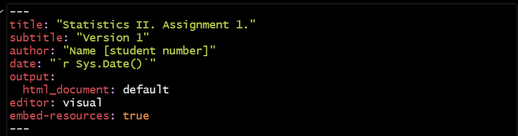
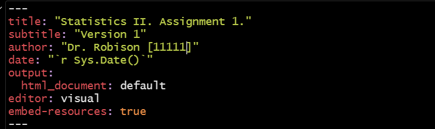
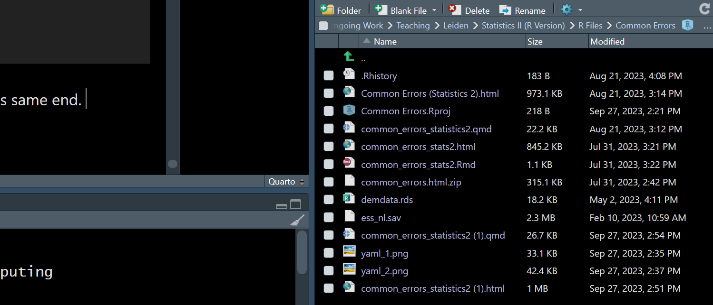
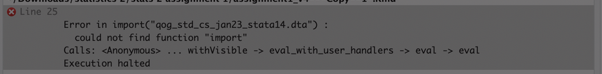
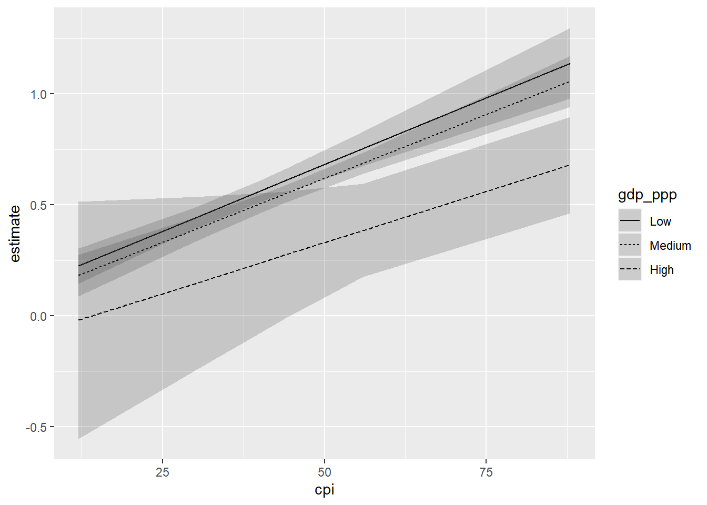

library(rio)
ess <- import("ess_nl.sav")Bijlage A — Veelgemaakte fouten in R
Output uitleg
Dit document wordt regelmatig bijgewerkt op basis van feedback van studenten uit zowel Leiden als Den Haag, en is daarom vooralsnog alleen in het Engels beschikbaar.
This Appendix documents some of the most common errors that might arise when working with R in Statistics II. This document complements a similar one available for the operations introduced in Statistics I (see here)
If you are unsure where to look, try to search this document for any error message you get (using CTRL/CMD + F). If you cannot find your particular error in this document, then you can Google the error message that R produces as this can often turn up a potential solution.
A.1 Your R assignment file (.rmd) won’t knit to an html file
The Problem
You are trying to knit your assignment and you receive an error such as “No such file or directory”; more generally, you cannot knit to an html
The scenario: you have been successfully working through an R assignment in the .rmd file that was provided to you. However, you receive an error message such as “No such file or directory” when you try and “knit” the file to an html (i.e., ask R to convert the .rmd file into an html file). More generally, everything works while working in R Studio until you try to knit the final file.
There are a variety of potential causes for this problem. They perhaps share a common root though: when you ask R to “knit” a file, R will essentially from a blank slate and begin working downwards through your .rmd file. By blank slate, we mean that R will act as if you have not loaded any libraries or imported data or stored regression results (etc.) in the Environment and start running all the syntax that you have created to do these things. Here we’ll discuss three ways this could short circuit the ‘knitting’ process. First, though, we’ll note a general piece of advice:
Advice
Knit as you go!
If you have had difficulties knitting a document before, we suggest “knitting as you go”. Specifically, knit your .rmd file (convert it into an html) after every major section (e.g., after loading packages and your data, after question 1, after question 2…). Doing so may enable you to more quickly find, and troubleshoot, the specific problem affecting your file. For instance, if you can successfully knit your document after the first three questions of an assignment but have a problem after the fourth, then this implies that it is something specifically about the fourth question that is derailing the process. This can help you avoid spending unnecessary time and effort working through the earlier portions of the file.
A.1.1 Incorrectly Specifying the “yaml”
The Cause
The “yaml” has been incorrectly specified
All .rmd documents begin with something called the “yaml”. This is the portion of the document that lays out the basic attributes of the file you are trying to create: its title, author information, and other basic formatting details. Here is an example:

The “yaml” is the first thing that R deals with when knitting your file, so if there is a mistake here then the file won’t be produced. We have seen three types of error in student submissions on this front:
Removing quotation marks: the title, author, and date information should all be enclosed within quotation marks. Removing them will lead to an error.
Adding information in the “sys.date()” area: “r sys.date()” is a specific snippet of syntax that tells R to use the date on your computer as the date in the html that is being produced. This general syntax is nice because it means we do not need to constantly update this line if we are working with a file over time. However, if you add information here (e.g., “r sys.date(27-09-2023”), then R will grind to a halt because this is not how the syntax works. In fact, we had to take special care formatting this bullet point because a mistake with writing out the “sys.date” information initially prevented this file from knitting to an html!
Adding additional options: For instance, we have seen students add something like “pdf: default” to the format area. R can knit to pdf files, but this requires some additional packages be installed to handle the conversion from an .rmd file to a .pdf file. Creating .pdf files can also be a little finicky as well. Adding this information can thus produce errors.
The Solution
Uh…don’t do those things!
More specifically, you should only make one change to the “yaml” area - you should update the author information to include your name and your student number while making sure that this information is provided in quotation marks. Everything else should be left as is.
As an example:

A.1.2 Not Properly Importing Your Data
The Cause
You are manually loading data via the Files window rather than using syntax
We load data into the R Environment, thereby enabling us to work with it, via syntax. Specifically, we use the import() function from the rio package:
We have seen some students take a different, and worse, route to this same end. Specifically, there is a “Files” window in R Studio that is typically presented in the bottom/right of the R Studio window, as so:

Here we can see that there are some data files within the working directory containing this .rmd file (e.g., “ess_nl.sav” or “demdata.rds”). We may be able to load this data by double clicking on the file and using the “Import Dataset” option that pops up. However, this is a bad idea. Remember that R begins working downwards within your .rmd file as it tries to knit it to an html. If you take this route to loading the data, then R will move through the yaml and fail to find the necessary syntax to load the rio package or to load your data via import(). It won’t know that you have loaded the file manually because it is, per above, working in a type of blank slate environment. This is will almost certainly lead to lots of errors as R works through your file because you will be asking it to do things with data that it doesn’t know exists since you are not including the necessary information within the .rmd file itself.
The Solution
Properly load your data.
The solution is simple: use the appropriate syntax to load your data.
A.1.3 Not loading libraries within the .rmd file
The Problem
Performing operations outside of the .rmd file that are required for your analyses
This is a more general version of the previous issue. For instance, perhaps you have loaded the rio library and correctly imported your data via syntax … just not in the .rmd file (e.g., you may have entered these commands directly in the Console portion of R Studio or perhaps have run them from within an R Script that is separate from your .rmd file). The same problem would emerge: you would have access to the libraries and functions in question to work with while completing your assignment, but R wouldn’t when it started to knit your document because it’s not in the set of commands you’re directly sending it.
One tip off here may be in the error message that R provides you. Consider the following error message taken from a student’s error-prone .rmd file last year:

In this instance, the student is running into an issue with knitting. R provides us with information about the specific input that is causing a problem (“Error in import(….)”) and the specific problem (“could not find function ‘import’”). One way this error could emerge is if rio were loaded outside of the .rmd file (that is: the .rmd file does not contain library(rio) to load the library for use) such that R will have no idea where to find this command. (Another potential explanation for this error is below.)
The Solution
Keep all your steps in the same .rmd file
This is a type of problem that can readily emerge, but also one that can be readily fixed: make sure you have included all of the relevant syntax in the .rmd file.
A.1.4 Library/Package Conflicts
The Cause
Two or more R libraries conflict with one another and have been loaded in such a way that this grinds R to a halt; packages loaded in an order that creates issues
R libraries may sometimes feature identically named commands (e.g., both the tidyverse/dplyr and car libraries contain a function named recode()). In such instances, R will use the function from the library loaded most recently/last. This can create problems down the line; see SECTION for more on this particular conflict.
Another way this could emerge is if the syntax for loading the library and syntax for using it are mis-ordered. This, for instance, would lead to an error:
demdata <- import("demdata.rds")Error in import("demdata.rds"): could not find function "import"library(rio)Warning: package 'rio' was built under R version 4.3.1R would try and use the import function here, but an error would emerge because the library from which this command originates has not been loaded at that point and, hence, R will not know how to act.
The Solution
Load relevant libraries at the start of the R document and pay attention to potential conflicts
We recommend you begin your assignment by reading it in full to understand all of the steps that you will need to accomplish and then loading all of the relevant libraries at the start of the document so that R will know what it has accessible to use in later portions. This should be done in a way that does not introduce conflicts. Here we note two particular sources of conflict, both with the tidyverse library:
expsscar
We recommend loading these libraries before loading the tidyverse library to avoid conflicts (or, if necessary, taking one of the other strategies for avoiding conflict discussed in SECTION).
A.2 Not seeing the right number of categories for factor variables in regression models
The Problem
You tried to convert a categorical variable into a factor variable but only one coefficient is present in the regression output
We include categorical variables in a regression model by first converting the variable into a factor variable. R will then include the appropriate number of indicators in the model for us. For instance, if we have a categorical variable with four levels, then R will include three indicators in the model if we successfully convert the variable into a factor variable.
Suppose we have a numeric variable in our dataset corresponding to the gross domestic product in a country where countries are sorted into one of three groups: “low” GDP (value of 1), medium GDP (value of 2), and “high” GDP (value of 3). We would include this variable in our model by converting it into a factor variable. We should then see two indicators for this variable in the model (with the left out group acting as the reference category). For instance:
#Distribution of Variable
table(dta$gdp_3cat)
1 2 3
40 78 40 #Convert to factor variable
dta <- dta |>
mutate(gdp_3cat_factor = factorize(gdp_3cat))
#Run and summarize the regression
model1 <- lm(v2x_polyarchy ~ gdp_3cat_factor, data=dta)
summary(model1)
Call:
lm(formula = v2x_polyarchy ~ gdp_3cat_factor, data = dta)
Residuals:
Min 1Q Median 3Q Max
-0.67320 -0.15257 0.04909 0.17964 0.36359
Coefficients:
Estimate Std. Error t value Pr(>|t|)
(Intercept) 0.24184 0.05264 4.594 8.91e-06 ***
gdp_3cat_factor 0.14879 0.02480 6.000 1.33e-08 ***
---
Signif. codes: 0 '***' 0.001 '**' 0.01 '*' 0.05 '.' 0.1 ' ' 1
Residual standard error: 0.2218 on 156 degrees of freedom
(21 observations deleted due to missingness)
Multiple R-squared: 0.1875, Adjusted R-squared: 0.1823
F-statistic: 36 on 1 and 156 DF, p-value: 1.329e-08We only have one indicator in our model for the factor variable. Why?1
The Cause
You used factorize() with non-labelled data.
We can convert a variable into a factor variable in either of two ways in R:
factor(): This is a built in function that will work with any type of data.factorize(): This function comes from theriopackage.
factorize() is a handy tool but it only works with variables that have value labels stored within the dataset. In these instances, factorize() will automatically attach each numeric value with its corresponding value. While labelled data is common (but not universal) when the dataset in question is either a .dta or .sav file format, it is not common with .csv for .xlsx file formats. Note that by labelled data we mean situations where the labels are included within the datset itself rather than only being found in a separate codebook.
We can use the following function to obtain information as to whether a variable has value labels associated with it in the dataset that we are using: attr(dataset$varname, "labels"). Here is an example with two variables: one labelled and one unlabelled:
#Unlabelled
attr(dta$gdp_3cat, "labels")NULL#Labelled
attr(dta$Fragile2006, "labels") Fragile Intermediate Stable
1 2 3 In the former case, we observe the value of “NULL” meaning that no value labels are stored in the metadata for this variable. factorize() works by applying stored labels to numeric values, but there is nothing here to apply.
On the other hand, we see values reported in the latter case. The variable in question is a numeric variable with three values: 1 (associated with the label “Fragile”), 2 (associated with the label “Intermediate”), and 3 (associated with the label “Stable”). We can use factorize() in this instance with the resulting model reporting the correct number of terms in the model.2
dta <- dta |>
mutate(fragile = factorize(Fragile2006))
model2 <- lm(v2x_polyarchy ~ fragile, data=dta)
summary(model2)
Call:
lm(formula = v2x_polyarchy ~ fragile, data = dta)
Residuals:
Min 1Q Median 3Q Max
-0.64836 -0.14467 0.03116 0.15945 0.43393
Coefficients:
Estimate Std. Error t value Pr(>|t|)
(Intercept) 0.36907 0.02915 12.662 < 2e-16 ***
fragileIntermediate 0.14954 0.03975 3.762 0.000236 ***
fragileStable 0.36028 0.04345 8.291 4.2e-14 ***
---
Signif. codes: 0 '***' 0.001 '**' 0.01 '*' 0.05 '.' 0.1 ' ' 1
Residual standard error: 0.2162 on 161 degrees of freedom
(15 observations deleted due to missingness)
Multiple R-squared: 0.2996, Adjusted R-squared: 0.2909
F-statistic: 34.44 on 2 and 161 DF, p-value: 3.539e-13
Solution
Using factor() instead of factorize()
The built in factor() command will be more useful in this type of situation. Here we specify the levels of the factor variable (with the reference group being the first category provided in levels=c()) and its associated labels.
dta <- dta |>
mutate(gdp_3cat_correct = factor(gdp_3cat,
levels=c(1,2,3),
labels=c("Low", "Medium", "High")))
model3 <- lm(v2x_polyarchy ~ gdp_3cat_correct, data=dta)
summary(model3)
Call:
lm(formula = v2x_polyarchy ~ gdp_3cat_correct, data = dta)
Residuals:
Min 1Q Median 3Q Max
-0.70363 -0.13534 0.06887 0.15537 0.39479
Coefficients:
Estimate Std. Error t value Pr(>|t|)
(Intercept) 0.42105 0.03484 12.086 < 2e-16 ***
gdp_3cat_correctMedium 0.08716 0.04285 2.034 0.0437 *
gdp_3cat_correctHigh 0.29757 0.04927 6.040 1.1e-08 ***
---
Signif. codes: 0 '***' 0.001 '**' 0.01 '*' 0.05 '.' 0.1 ' ' 1
Residual standard error: 0.2203 on 155 degrees of freedom
(21 observations deleted due to missingness)
Multiple R-squared: 0.2034, Adjusted R-squared: 0.1931
F-statistic: 19.79 on 2 and 155 DF, p-value: 2.224e-08A.3 “Error in glm.fit…NA/NAN/Inf in ‘y’” and “not meaningful for factors”
The Problem
We’re trying to perform a logistic model where our DV is a factor variable but are running into a message saying “Error in glm.fit(x = c(1, 1, 1, 1, 1, 1, 1, 1, 1, 1, 1, 1, 1, 1, 1, 1, : NA/NaN/Inf in ‘y’” and “In Ops.factor(y, mu) : ‘-’ not meaningful for factors”
Suppose that we wish to predict a binary outcome for whether a person reports being close to a political party or not based on their age. We would use create a factor variable of the binary outcome variable and then use the glm() function, rather than lm() to do so. However, if we ran the following syntax, we would run into an error:
#Factorize the variable
ess <- ess |>
mutate(close_party = factor(clsprty,
levels = c(2, 1),
labels = c("Not Close", "Close to Party")))
#Run the model
glm(close_party ~ agea, data = ess)Warning in Ops.factor(y, mu): '-' not meaningful for factorsWarning in Ops.factor(eta, offset): '-' not meaningful for factorsWarning in Ops.factor(y, mu): '-' not meaningful for factorsError in glm.fit(x = structure(c(1, 1, 1, 1, 1, 1, 1, 1, 1, 1, 1, 1, 1, : NA/NaN/Inf in 'y'
The Cause
We haven’t specified a “family” for the model.
The glm() function can be used to fit a variety of different models depending on the nature of the dependent variable. We specify the type of model (and hence the nature of the DV) via a family= option. If we do not specify a family option, then glm() will default to attempting to perform a linear model, which creates an error when the DV is a factor variable.3
Solution
Specify the correct family, here: “family =”binomial”
glm(close_party ~ agea, data = ess, family = 'binomial')
Call: glm(formula = close_party ~ agea, family = "binomial", data = ess)
Coefficients:
(Intercept) agea
-0.64393 0.01825
Degrees of Freedom: 1646 Total (i.e. Null); 1645 Residual
(26 observations deleted due to missingness)
Null Deviance: 2260
Residual Deviance: 2214 AIC: 2218A.4 “Unable to compute predicted values with this model”
The Problem
We’re using avg_slopes() to try and find the slope for a variable but are running into an error: “Unable to compute predicted values with this model”
Suppose we have a binary dependent variable that we wish to predict with a binary or category independent variable. For instance, we might want to know if the chances of voting are higher/lower among men versus women. We would convert both variables to factor variables and perform a logistic model. The syntax below walks through this process by first investigating the variables (e.g., what labels are associated with each category); converting both variables to factors; and then running the model and reporting the results.
#Value Values
attr(ess$vote,"labels")
attr(ess$gndr, "labels")
#Distribution
table(ess$vote)
table(ess$gndr)
#Convert into factor
#Vote: 0 = did not vote, 1 = voted
#Gender: 0 = male, 1 = female
ess <- ess |>
mutate(voted = factor(vote, levels=c(2,1),
labels=c("Did Not Vote", "Voted")),
gender = factorize(gndr))
#Model and Summary
ame_example <- glm(voted ~ gender, data=ess, family="binomial")
summary(ame_example)- 1
-
attr(data$variable, "labels")is a shortened version ofattributes(data$variable)that only shows whether there are value labels associated with the variable.
Yes No Not eligible to vote
1 2 3
Refusal Don't know No answer
7 8 9
Male Female No answer
1 2 9
1 2 3
1291 247 130
1 2
833 840
Call:
glm(formula = voted ~ gender, family = "binomial", data = ess)
Coefficients:
Estimate Std. Error z value Pr(>|z|)
(Intercept) 1.7484 0.1015 17.229 <2e-16 ***
genderFemale -0.1836 0.1392 -1.318 0.187
---
Signif. codes: 0 '***' 0.001 '**' 0.01 '*' 0.05 '.' 0.1 ' ' 1
(Dispersion parameter for binomial family taken to be 1)
Null deviance: 1355.5 on 1537 degrees of freedom
Residual deviance: 1353.7 on 1536 degrees of freedom
(135 observations deleted due to missingness)
AIC: 1357.7
Number of Fisher Scoring iterations: 4The coefficient for our IV is negative, which indicates that female respondents have a lower chance of reporting that they turned out to vote than men (although this difference is not statistically significant). This coefficient is on the log of the odds (logit) scale, which is hard to interpret. We may want to look at the average difference in the probability of turning out between women and men to more clearly communicate the difference between the two groups. We can do this by using the avg_slopes() function from the marginaleffects package. However, in this instance we receive an error message:
avg_slopes(ame_example)Error: Unable to compute predicted values with this model. This error can arise
when `insight::get_data()` is unable to extract the dataset from the
model object, or when the data frame was modified since fitting the
model. You can try to supply a different dataset to the `newdata`
argument.
In addition, this error message was raised:
Error in model.frame.default(Terms, newdata, na.action = na.action, xlev
= object$xlevels): factor gender has new levels No answer
Bug Tracker:
https://github.com/vincentarelbundock/marginaleffects/issues
The Cause
There is a category with no observations.
Let’s take a look at the gender variable we created earlier compared with its original form:
#Original Variable
attr(ess$gndr, "labels") Male Female No answer
1 2 9 table(ess$gndr)
1 2
833 840 #Recoded
levels(ess$gender)[1] "Male" "Female" "No answer"table(ess$gender)
Male Female No answer
833 840 0 The gndr variable has three labels associated with it: Male (=1), Female (=2), and No Answer (=9). However, no observations have a value of 9 on this original variable. Regardless, factorize() will still port over the label for “No Answer”. The issue is that avg_slopes() is expecting there to be observations with a label of “No Answer” - when it finds none, it crashes.
Solution
Use droplevels() to removing categories with no observations or use factor() to create the variable to begin with
We can avoid this issue in either of two ways. First, we could use droplevels() to drop levels (and their associated labels) that have no observations. Second, we can preempt the problem by simply using factor() and only including the categories we care about.
#Recoding Using the Two Options
ess <- ess |>
mutate(
#Option 1: droplevels()
gender_opt1 = factorize(gndr),
gender_opt1 = droplevels(gender_opt1),
#Option 2: factor() from the beginning
gender_opt2 = factor(gndr,
levels=c(1,2),
labels=c("Male", "Female")))
#Levels
levels(ess$gender_opt1)[1] "Male" "Female"levels(ess$gender_opt2)[1] "Male" "Female"#Option 1:
ame_example_opt1 <- glm(voted ~ gender_opt1, data=ess, family="binomial")
avg_slopes(ame_example_opt1)
Term Contrast Estimate Std. Error z Pr(>|z|) S
gender_opt1 mean(Female) - mean(Male) -0.0247 0.0187 -1.32 0.187 2.4
2.5 % 97.5 %
-0.0614 0.012
Columns: term, contrast, estimate, std.error, statistic, p.value, s.value, conf.low, conf.high, predicted_lo, predicted_hi, predicted
Type: response #Option 2
ame_example_opt2 <- glm(voted ~ gender_opt2, data=ess, family="binomial")
avg_slopes(ame_example_opt2)
Term Contrast Estimate Std. Error z Pr(>|z|) S
gender_opt2 mean(Female) - mean(Male) -0.0247 0.0187 -1.32 0.187 2.4
2.5 % 97.5 %
-0.0614 0.012
Columns: term, contrast, estimate, std.error, statistic, p.value, s.value, conf.low, conf.high, predicted_lo, predicted_hi, predicted
Type: response A.5 “A continuous variable cannot be mapped to the linetype aesthetic”
The Problem
We’re trying to create a predicted values plot from a model with an interaction involving a continuous variable and see the error “A continuous variable cannot be mapped to the linetype aesthetic”
Suppose we predict a country’s democracy score with a continuous measure of gross domestic product (gdp_ppp), a continuous measure of corruption (cpi), and their interaction:
inter_model <- lm(v2x_polyarchy ~ gdp_ppp*cpi, data=dta)
summary(inter_model)
Call:
lm(formula = v2x_polyarchy ~ gdp_ppp * cpi, data = dta)
Residuals:
Min 1Q Median 3Q Max
-0.58552 -0.09686 0.02947 0.13111 0.30958
Coefficients:
Estimate Std. Error t value Pr(>|t|)
(Intercept) 8.250e-02 5.643e-02 1.462 0.146
gdp_ppp -1.902e-06 3.092e-06 -0.615 0.539
cpi 1.203e-02 1.463e-03 8.220 8.34e-14 ***
gdp_ppp:cpi -2.524e-08 4.370e-08 -0.578 0.564
---
Signif. codes: 0 '***' 0.001 '**' 0.01 '*' 0.05 '.' 0.1 ' ' 1
Residual standard error: 0.1833 on 152 degrees of freedom
(23 observations deleted due to missingness)
Multiple R-squared: 0.4538, Adjusted R-squared: 0.443
F-statistic: 42.09 on 3 and 152 DF, p-value: < 2.2e-16Interpreting coefficients in a model with an interaction can be tricky and especially so when both variables are continuous variables. One solution is to use predictions() function to obtain predicted values across the range of our main variable for different values of our moderator (e.g., “low”, “medium”, and “high”). For instance:
inter_preds <- predictions(inter_model,
newdata = datagrid(
cpi = c(12,30,40,43.94,56,88),
gdp_ppp = c(711.4, 20309.8, 111751.3)))
inter_preds
cpi gdp_ppp Estimate Std. Error z Pr(>|z|) S 2.5 % 97.5 %
12.0 711 0.2253 0.0405 5.5659 <0.001 25.2 0.1459 0.305
12.0 20310 0.1821 0.0479 3.8040 <0.001 12.8 0.0883 0.276
12.0 111751 -0.0196 0.2732 -0.0717 0.9429 0.1 -0.5550 0.516
30.0 711 0.4415 0.0248 17.8188 <0.001 233.5 0.3929 0.490
30.0 20310 0.3893 0.0282 13.7902 <0.001 141.3 0.3340 0.445
30.0 111751 0.1462 0.1995 0.7325 0.4639 1.1 -0.2449 0.537
40.0 711 0.5616 0.0251 22.3295 <0.001 364.5 0.5123 0.611
40.0 20310 0.5045 0.0210 23.9895 <0.001 420.0 0.4633 0.546
40.0 111751 0.2382 0.1608 1.4820 0.1383 2.9 -0.0768 0.553
43.9 711 0.6089 0.0275 22.1578 <0.001 359.0 0.5550 0.663
43.9 20310 0.5499 0.0199 27.6463 <0.001 556.5 0.5109 0.589
43.9 111751 0.2745 0.1463 1.8768 0.0605 4.0 -0.0122 0.561
56.0 711 0.7537 0.0392 19.2345 <0.001 271.5 0.6769 0.831
56.0 20310 0.6887 0.0241 28.5995 <0.001 595.2 0.6415 0.736
56.0 111751 0.3856 0.1071 3.5986 <0.001 11.6 0.1756 0.596
88.0 711 1.1380 0.0810 14.0449 <0.001 146.4 0.9792 1.297
88.0 20310 1.0572 0.0588 17.9733 <0.001 237.5 0.9419 1.173
88.0 111751 0.6802 0.1107 6.1456 <0.001 30.2 0.4633 0.897
Columns: rowid, estimate, std.error, statistic, p.value, s.value, conf.low, conf.high, cpi, gdp_ppp, v2x_polyarchy
Type: response There is a lot of data here to try and read/interpret. However, we can create a nice plot to summarize the predictions. Unfortunately, we run into the following error when running this syntax:
ggplot(inter_preds, aes(x=cpi, y=estimate, linetype = gdp_ppp)) +
geom_line() +
geom_ribbon(aes(ymin=conf.low, ymax=conf.high), alpha = 0.2)Error in `geom_line()`:
! Problem while computing aesthetics.
ℹ Error occurred in the 1st layer.
Caused by error in `scale_f()`:
! A continuous variable cannot be mapped to the linetype aesthetic
ℹ choose a different aesthetic or use `scale_linetype_binned()`
The Cause
The variable being used to specify linetype (or color, etc.) is numeric in value.
We created three sets of predictions above: one where gdp_ppp = 711.4 and cpi took on one of five values from across its range; one where gdp_ppp = 20309.8 and cpi took on one of those five values; and one where cpi = 111751.3 and cpitook on one of those values. We can visually differentiate between these different predictions by telling ggplot() to use a different type of line for each set (or, perhaps, a different color). But, the linetype function requires the variable in question to be a factor.
Solution
Convert the problematic numeric variable to a factor and then run the ggplot() command.
We can avoid this issue by converting the offending variable to a factor variable using the factor() function.
#Convert to factor
inter_preds <- inter_preds |>
mutate(
gdp_ppp = factor(gdp_ppp,
levels=c( 711.4, 20309.8, 111751.3),
labels=c("Low", "Medium", "High")))
#Create the plot
ggplot(inter_preds, aes(x=cpi, y=estimate, linetype = gdp_ppp)) +
geom_line() +
geom_ribbon(aes(ymin=conf.low, ymax=conf.high), alpha = 0.2)
There could an additional culprit: missing data. Suppose that you have 1 DV and two IVs, one of which is a categorical variable with three levels (low, middle, and high) and the other a continuous variable. R will automatically drop observations from the model that have missing data on at least one of the variables in the model (DV and IV). Suppose that all of the observations with a classification of “high” on the categorical variable have missing (NA) values on the continuous variable - in that instance, R would not have the necessary data to estimate a coefficient for the “high” category and, as a result, you would likely only get indicators for one category of the categorical variable (comparing it to the reference group) and one for the continuous variable.↩︎
Of course, in practice we might want to follow the
factorize()step with a subsequent step where werelevelthe variable, i.e., change the reference group. Alternatively we could simply usefactor()in this instance as well and handle the levelling and labelling all at once.↩︎What if the DV was simply coded 0/1 and not converted to a factor? The syntax in this example would run but a different problem would emerge: the
glm()command would fit a linear model (i.e., a linear regression model) to the data rather than a logistic model. This is another reason to explicitly specify the family to be used when using theglm()function.↩︎